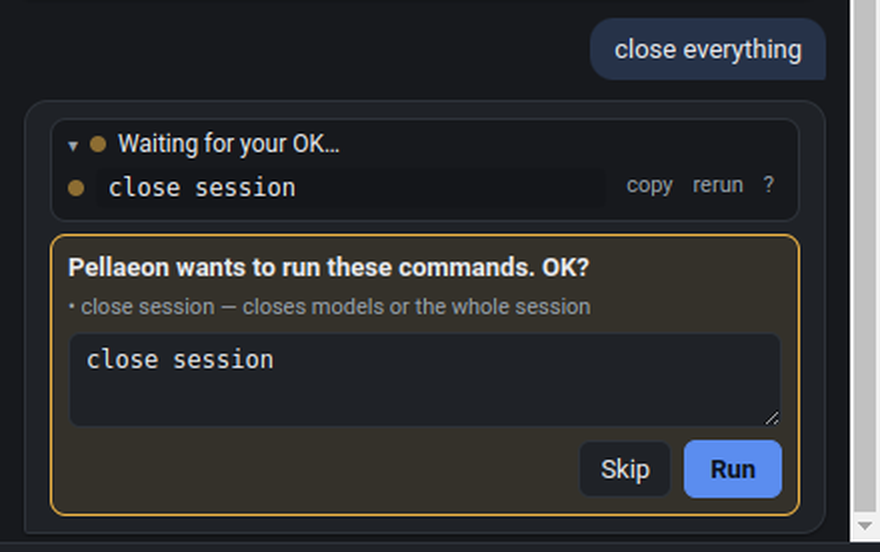

Talk to ChimeraX in plain English.
A chat panel inside UCSF ChimeraX. Say what you want; Pellaeon runs the commands, shows each one, fixes failures from ChimeraX's own errors and documentation, and asks before anything risky.
open https://github.com/tggr-lab/pellaeon/releases/latest/download/install_pellaeon.py
Paste into ChimeraX's command line. Offline install and the classic Chimera edition.

Three steps
- Install the panel. The one line above. Details
- Connect a model. Paste a free Mistral key, or point Pellaeon at Ollama on your own machine. Get a free key · Local or cloud?
- Run a first request. A button on the settings page opens ubiquitin and colors it by chain, so you know the whole route works before you type your own.
Say it like you would to a colleague
How it works
A plain chat model guesses commands from memory and never sees what happened. Pellaeon gives the model your ChimeraX's documentation and the live session, restricts it to logged tools, stops risky actions for your OK, and feeds every error back so it can correct itself.
What you get
Every command, visible
Each reply lists the exact ChimeraX commands it ran, with copy, re-run and a link to ChimeraX's documentation for that command. Export a chat as a replayable .cxc script.
Risky things ask first
Closing models, deleting atoms, saving files and running scripts show an editable confirmation card. Everything else just happens.
Local or cloud AI
A free Mistral or Gemini key, Ollama on your own machine (free, private, nothing leaves it), Claude, OpenAI, or any OpenAI-compatible server. Which one? What we measured
Figures you can reproduce
Save figure writes a folder, not a file: the image, a ChimeraX session, the replayable script, a per-residue color table, where every model came from, and a draft legend built only from what actually ran.
Ask why
Select a residue and ask "why is this red?". Pellaeon answers from its own record: the command, table column, annotation or comparison that colored it, with the value and where it came from. A command that matched nothing is marked as such instead of getting a green tick.
Labels you can read
Labels come out at a fixed size, on top of everything, black on white. Say "the labels overlap" and Pellaeon measures where each one lands on screen, nudges the ones that collide and removes the ones that cannot fit.
Click to ask
Select a residue in the 3D view and ask what it is or what is nearby, or Alt-click it.
Your own data on the structure
Import a CSV of per-residue values. Pellaeon checks the numbering against the structure, reports what did not map, and colors by value or category. Each table stays available as a layer.
Pathogenicity and conservation, one request
"Color it by AlphaMissense" fetches DeepMind's predicted pathogenicity for every position of a human protein; "color by conservation" pulls ConSurf's grades for a PDB chain. Placed through the right numbering, with a key, and reported honestly when a database has nothing for that protein.
Numbering you can trust
Positions from a paper or UniProt rarely match a crystal structure's residue numbers. Ask where UniProt residue 159 is and Pellaeon maps it through the chain's own alignment, reports the offset, and colors the right residue.
Bookmarks, movies, one look
Bookmark a view and go back to it by name. Ask for a spin, a rock or a tour of your bookmarks as a movie. Apply the styling of a saved figure to the next structure so a paper keeps one look.
Compare and annotate
Superpose two models and color by displacement using MatchMaker's own alignment, or ask which contacts and salt bridges are lost and gained between two conformations. Pull UniProt features or ClinVar variants onto the right chain with the right numbering.
Two editions
ChimeraX
A native bundle: one line to install, docked panel, full session awareness. Windows, macOS, Linux.
Classic Chimera 1.x
A small program with a launcher window and the same panel in your browser, driving Chimera through its REST server. How it works.
Screens

The panel docks on the right; the 3D view stays where it always was.

Comparing two conformations: fit RMSD, per-residue displacement, moving regions you can click.

A risky command waits for your OK; the commands are editable.

Settings: pick a provider, test it, run a first request.
Privacy
With Ollama the model runs on your computer. Requests, the list of open models and the current selection go only to the provider you chose. Gene and variant lookups go to UniProt and ClinVar when you ask for them. API keys are stored on your machine, never in ChimeraX sessions.